Additional Distributor Parts
1959-1973 Standard Motor Products TV201X Ignition Point Set NOS Dodge Charger
TV201X
Fits 1969-1973 Dodge Charger · 1961-1972 Chrysler Imperial (2141 listed)
$21.99
View details129 parts from Standard Motor Products, mostly ignition & tune-up, engine parts and electrical & sensors. Each listing shows the part number, condition and photos. Check fitment on the part page before you order.
129 parts
Online checkout through Square. Ships from Carbondale, PA, or pick up by confirmed appointment only. Fitment question? Message us.
TV201X
Fits 1969-1973 Dodge Charger · 1961-1972 Chrysler Imperial (2141 listed)
$21.99
View details
JH-81
Fits 1984-1989 Toyota 4Runner · 1980-1989 Toyota Pickup (140 listed)
$17.99
View details
LX218T
Fits 1984-1996 Ford F-150 · 1984-1991 Ford F-250 (2372 listed)
$35.99
View details
D1980
Fits 1985-1996 Buick Century · 1985-1986 Chevrolet Camaro (112 listed)
$44.99
View details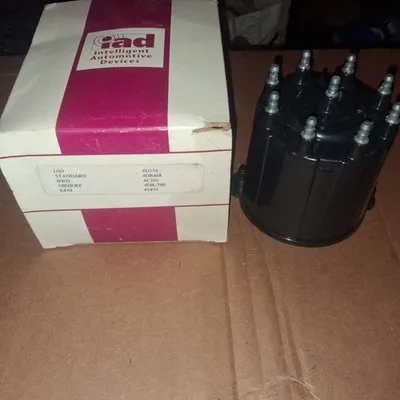
DR468
Fits 1975-1981 Chevrolet Camaro · 1987-1992 Chevrolet Caprice (591 listed)
$26.99
View details
DH411HP
Fits 1978-1996 Ford Bronco · 1979-1995 Ford Mustang (1490 listed)
$26.99
View details
FD-110
Fits 1966-1974 Ford Bronco · 1965-1970 Ford Mustang (734 listed)
$19.99
View details
CH-309
Fits 1988-1993 Dodge B250 · 1989-1993 Dodge D150 (467 listed)
$12.99
View details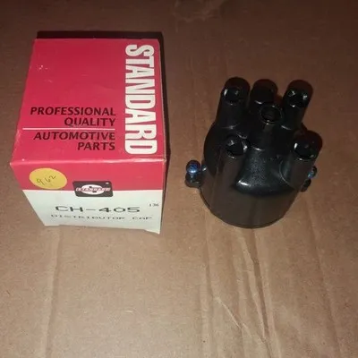
CH-405
Fits 1982-1985 Chrysler LeBaron · 1982-1984 Dodge Rampage (58 listed)
$17.99
View details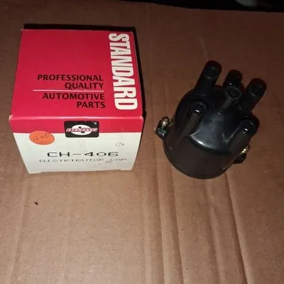
CH-406
Fits 1984-1987 Mazda 626 · 1987-1989 Chrysler Conquest (267 listed)
$14.99
View details
CH307
Fits 1988-1995 Dodge Caravan · 1988-1996 Dodge Dakota (95 listed)
$14.99
View details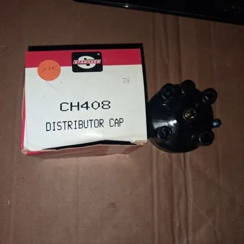
CH408
Fits 1986-1995 Chrysler LeBaron · 1986-1993 Chrysler Daytona (391 listed)
$19.99
View details
CH409
Fits 1961-1975 Chrysler Imperial · 1975 Dodge D100 (771 listed)
$21.99
View details
CH410
Fits 1960-1976 Dodge Dart · 1960-1976 Plymouth Valiant (1093 listed)
$36.99
View details
DR-320
Fits 1981-1987 Jeep Cj7 · 1982-1986 Buick Century (402 listed)
$12.99
View details
DR-323
Fits 1982-1985 Ford Mustang · 1982-1985 Ford Thunderbird (841 listed)
$13.99
View details
DR-325
Fits 1985-1986 Buick Century · 1985-1986 Buick Skyhawk (503 listed)
$12.99
View details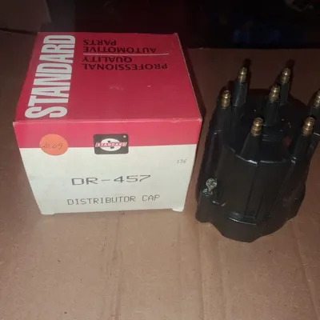
DR-457
Fits 1983-1986 Buick Century · 1983-1986 Chevrolet Celebrity (209 listed)
$15.99
View details
DR318
Fits 1979-1984 Cadillac DeVille · 1975-1986 Chevrolet C10 (707 listed)
$14.99
View details
DR326
Fits 1986-1993 Chevrolet Caprice · 1987-1994 Chevrolet Suburban (1676 listed)
$14.99
View details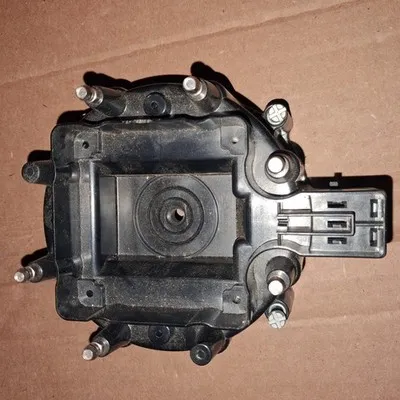
DR447
Fits 1975-1977 Buick Century · 1976-1977 Buick LeSabre (127 listed)
$19.99
View details
DR455
Fits 1982 AMC Concord · 1982-1983 AMC Eagle (379 listed)
$16.99
View details
DR459
Fits 1985-1986 Buick Century · 1985-1986 Buick Skylark (115 listed)
$12.99
View details
DR460
Fits 1985 Buick Skylark · 1985 Chevrolet Citation (2122 listed)
$19.99
View details
FD-118
Fits 1980-1986 Ford Bronco · 1979-1995 Ford Mustang (184 listed)
$12.99
View details
FD-148
Fits 1977-1983 Jeep CJ5 · 1977-1984 Jeep Cherokee (402 listed)
$21.99
View details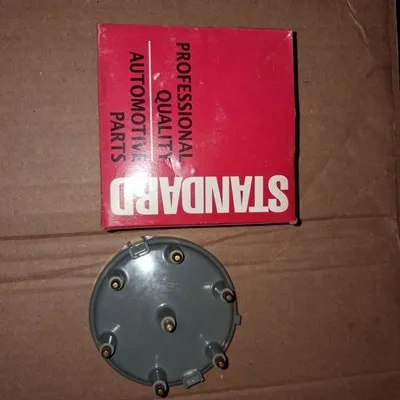
FD-151
Fits 1980-1986 Ford Bronco · 1977-1986 Ford E-150 Econoline (3000 listed)
$23.99
View details
FD-168
Fits 1977-1996 Ford Bronco · 1979-1995 Ford Mustang (3000 listed)
$23.99
View details
FD-308
Fits 1986-1997 Ford Aerostar · 1984-1996 Ford Bronco (14 listed)
$15.99
View details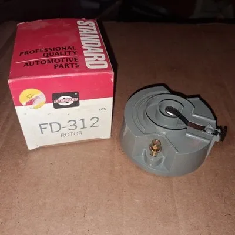
FD-312
Fits 1983-1996 Ford Bronco · 1983-1996 Ford Mustang (48 listed)
$12.99
View details
FD303
Fits 1981-1986 Ford Escort · 1983-1985 Ford Mustang (502 listed)
$12.99
View details
FD307
Fits 1985-1996 Ford Bronco · 1985-1996 Ford Mustang (62 listed)
$16.99
View details
IH121
Fits 1953-1964 Ford F-100 · 1954 Ford Club (1181 listed)
$17.99
View details
JH-108
Fits 1985-1988 Mitsubishi Cordia · 1985 Mitsubishi Galant (57 listed)
$26.99
View details
JH-110
Fits 1976-1983 Honda Accord · 1973-1983 Honda Civic (87 listed)
$19.99
View details
JH-119
Fits 1984-1987 Honda Civic · 1984 Honda Wagovan (37 listed)
$23.99
View details
JH-129
Fits 1982-1983 Datsun 200SX · 1982 Datsun 720 (79 listed)
$26.99
View details
JH-151
Fits 1988-1991 Acura Integra · 1988-1991 Honda CRX (68 listed)
$28.99
View details
JH-167
Fits 1994-2000 Pontiac Firefly · 1998-2000 Chevrolet Metro (69 listed)
$31.99
View details
JH-67
Fits 1984 Dodge Colt · 1984-1987 Hyundai Pony (102 listed)
$23.99
View details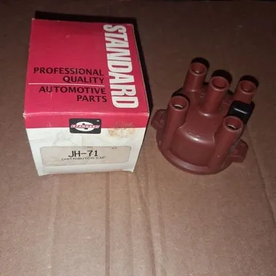
JH-71
Fits 1976-1978 Toyota Celica · 1976-1979 Toyota Corolla (125 listed)
$16.99
View details
JH-72
Fits 1976-1979 Toyota Corolla · 1975-1978 Toyota Corona (155 listed)
$21.99
View details
JH-98
Fits 1983-1988 Toyota Corolla · 1983-1988 Toyota Tercel (129 listed)
$24.99
View details
JH128
Fits 1987-1989 Dodge Colt · 1986-1994 Hyundai Excel (111 listed)
$26.99
View details
JH152
Fits 1983 Nissan Pulsar · 1982-1985 Nissan Sentra (85 listed)
$13.99
View details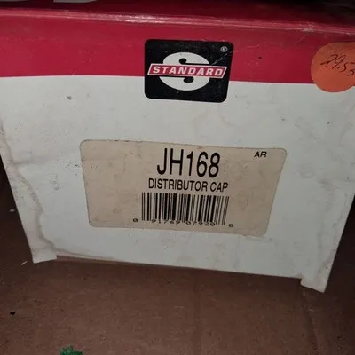
JH168
Fits 1985-1987 Nissan Stanza (8 listed)
$18.99
View details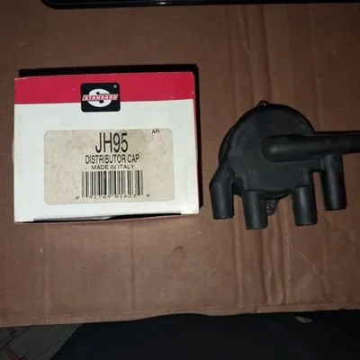
JH95
Fits 1990-1991 Acura Integra · 1988-1991 Honda CRX (52 listed)
$24.99
View details
JR-103
Fits 1987-1991 Dodge Colt · 1987-1991 Plymouth Colt (142 listed)
$17.99
View details
JR-109
Fits 1992-1994 Dodge Colt · 1992-1994 Plymouth Colt (84 listed)
$12.99
View details
JR-117
Fits 1984-1988 Nissan 200SX · 1987-1989 Nissan Stanza (51 listed)
$21.99
View details
JR-75
Fits 1971-1979 Toyota Corolla · 1976-1980 Chevrolet LUV (495 listed)
$14.99
View details
JR-95
Fits 1986-1995 Toyota 4Runner · 1983-1986 Toyota Camry (227 listed)
$17.99
View details
JR101
Fits 1986-1988 Chevrolet Spectrum · 1988-1992 Daihatsu Charade (429 listed)
$17.99
View details
JR122T
Fits 1987-1989 Mercury Tracer · 1987-1991 Subaru Justy (50 listed)
$18.99
View details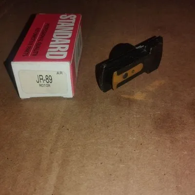
JR89
Fits 1981-1989 Honda Accord · 1981-1989 Honda Prelude (80 listed)
$16.99
View details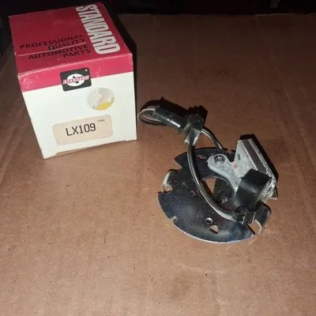
LX-109
Fits 1976-1980 Chrysler Cordoba · 1985-1989 Chrysler Fifth Avenue (690 listed)
$28.99
View details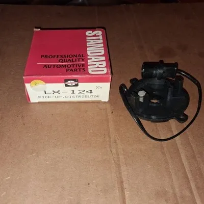
LX-124
Fits 1986-1988 Dodge 600 · 1986-1995 Dodge Caravan (43 listed)
$31.99
View details
LX-338
Fits 1986-1987 Buick Regal · 1986-1987 Pontiac Grand Am (57 listed)
$69.99
View details
LX-339
Fits 1985-1986 Buick Century · 1985-1986 Buick Skylark (250 listed)
$37.99
View details
LX-346
Fits 1994-2005 Buick Century · 1988-1996 Buick Regal (477 listed)
$69.99
View details
AS5
Fits 1982-1997 Chevrolet Camaro · 1996-1997 Acura SLX (706 listed)
$53.99
View details
DR-39
Fits 1986-2005 Buick Century · 1986-2005 Buick LeSabre (2075 listed)
$29.99
View details
DR36
Fits 1988-1990 Buick LeSabre · 1988-1991 Buick Reatta (48 listed)
$79.99
View details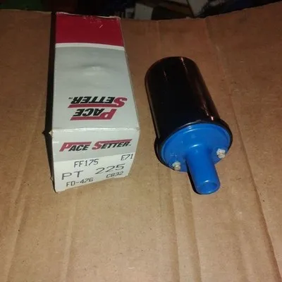
FD-476
Fits 1987-1990 Jeep Wrangler (38 listed)
$26.99
View details
GB-344
Fits 1981-1984 Volkswagen Rabbit · 1975-1985 Volvo 244 (55 listed)
$17.99
View details
HR151
Fits 1974-1996 Buick Century · 1974-1988 Buick Regal (3000 listed)
$24.99
View details
JH-116
Fits 1986-1989 Mazda 323 · 1987-1990 Mercury Tracer (41 listed)
$14.99
View details
JH125
Fits 1984-1985 Honda Civic (24 listed)
$26.99
View details
JH207
Fits 1992-1997 Honda Accord · 1992-2001 Honda Prelude (104 listed)
$19.99
View details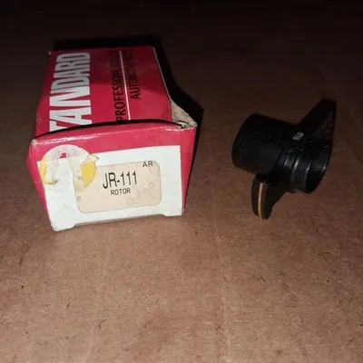
JR-111
Fits 1991 Honda Prelude (5 listed)
$19.99
View details
JR72
Fits 1976-1989 Honda Accord · 1973-1987 Honda Civic (693 listed)
$12.99
View details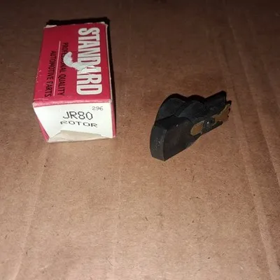
JR80
Fits 1974-1991 Dodge Colt · 1984-1989 Dodge Ram 50 (187 listed)
$14.99
View details
LX-342
Fits 1992-1994 Chevrolet Suburban · 1993 Asuna GT (3000 listed)
$19.99
View details
RX-103
Fits 1972-1979 Chevrolet Camaro · 1970-1974 Chevrolet C10 Pickup (667 listed)
$17.99
View details
RY-113
Fits 1982-1987 Buick Century · 1982-1988 Buick Skylark (834 listed)
$19.99
View details
SG12
Fits 1986-1991 Acura Integra · 1984-1989 Honda Accord (75 listed)
$24.99
View details
SLS-131
Fits 1991 Buick Riviera · 1986-1992 Buick Skylark (71 listed)
$19.99
View details
ST60
$19.99
View details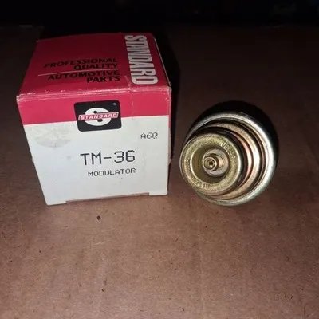
TM-36
Fits 1975-1976 Ford Bronco · 1975-1976 Ford Custom 500 (20 listed)
$66.99
View details
TS176
Fits 1984-1993 Chrysler Daytona · 1984-1996 Dodge Caravan (187 listed)
$34.99
View details
US-98
Fits 1986-1991 Ford Aerostar (75 listed)
$26.99
View details
VR166T
Fits 1963-1974 Ford Galaxie 500 · 1978 AMC AMX (236 listed)
$33.99
View details
PC7
Fits 1987-2005 Buick Century · 1988-1996 Buick Regal (691 listed)
$24.99
View details
PS-129
Fits 1978-1987 Buick Regal · 1978-1985 Buick Century (2333 listed)
$18.99
View details
PS-149
Fits 1966-1996 Ford Bronco · 1970-1973 Ford Mustang (681 listed)
$17.99
View details
PS-155
Fits 1977-1985 Buick Century · 1983-1986 Buick Skyhawk (1002 listed)
$19.99
View details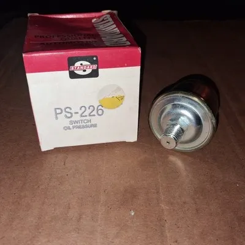
PS-226
Fits 1985-1999 Volkswagen Golf · 1982-1999 Volkswagen Jetta (286 listed)
$24.99
View details
PS-231
Fits 1989-1996 Dodge Dakota · 1988-1993 Dodge Dynasty (409 listed)
$19.99
View details
PS-233
Fits 1988-1996 Dodge Dakota · 1988-1993 Dodge Daytona (40 listed)
$31.99
View details
PS-236
Fits 1989-1991 Buick Regal · 1988 Cadillac Cimarron (25 listed)
$36.99
View details
PS-241
Fits 1985-1988 Buick Century · 1982-1986 Buick Skyhawk (857 listed)
$49.99
View details
PS-245
Fits 1987-1989 Buick Electra · 1988-1990 Buick LeSabre (36 listed)
$36.99
View details
PS160
Fits 1971-1994 Dodge Colt · 1998-2001 Chevrolet Metro (472 listed)
$19.99
View details
PS205
Fits 1984-1988 Chrysler Daytona · 1984 Chrysler E Class (616 listed)
$30.99
View details
RY-119
Fits 1988 Chrysler Dynasty · 1989-1995 Chrysler LeBaron (123 listed)
$24.99
View details
RY-27
Fits 1979-1995 Buick Century · 1979-1995 Buick Regal (917 listed)
$17.99
View details
SG22
Fits 1987-1988 Chrysler LeBaron · 1987-1988 Chrysler New Yorker (91 listed)
$21.99
View details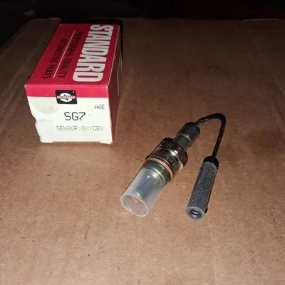
SG7
Fits 1985-1986 Chrysler LeBaron · 1985-1987 Dodge Caravan (58 listed)
$21.99
View details
SLS66
Fits 1973-1975 Buick Apollo · 1973-1981 Buick Century (843 listed)
$24.99
View details
SR-113
Fits 1981-1983 Jeep CJ7 · 1984-1987 Jeep Cherokee (181 listed)
$34.99
View details
SS-582
Fits 1980-1986 Jeep CJ7 · 1980-1987 Jeep Cherokee (372 listed)
$32.99
View details
SS598
Fits 1992-1996 Ford Bronco · 1984-1991 Ford F-150 (679 listed)
$22.99
View details
TH-52
Fits 1989-1990 Chrysler LeBaron · 1989-1990 Dodge Caravan (76 listed)
$23.99
View details
TH-61
Fits 1988-1990 Chrysler Dynasty · 1984-1986 Chrysler Laser (47 listed)
$44.99
View details
TH41
Fits 1986-1990 Chevrolet Astro · 1987-1990 Chevrolet Blazer (125 listed)
$41.99
View details
TS-106
Fits 1984-1993 Toyota Corolla · 1985-1988 Chevrolet Nova (97 listed)
$29.99
View details
TS76
Fits 1976 Chevrolet Chevette · 1979-1988 Buick Century (1385 listed)
$24.99
View details
TX3
Fits 1996-2014 Chevrolet Express 1500 · 1999-2013 Chevrolet Silverado 1500 (1134 listed)
$19.99
View details
TX6
Fits 2003-2010 Ford E-150 · 2003-2010 Ford E-250 (1952 listed)
$26.99
View details
US-94
Fits 1978-1986 Dodge Charger · 1978-1983 Dodge Omni (68 listed)
$39.99
View details
V187
Fits 1976-1987 Chevrolet Chevette · 1980-1987 Pontiac Acadian (85 listed)
$15.99
View details
V201
Fits 1980-1993 Ford Mustang · 1981-1988 Ford Thunderbird (237 listed)
$14.99
View details
V226
Fits 1979-1995 Dodge Colt · 1984-1987 Dodge Caravan (68 listed)
$17.99
View details
V227
Fits 1981-1986 GMC G2500 · 1981-1986 Chevrolet C10 Suburban (251 listed)
$16.99
View details
V231
Fits 1983-1989 Dodge Ram 50 · 1990-1998 Eagle Talon (192 listed)
$17.99
View details
V236
Fits 1983 Jeep CJ5 · 1987-1990 Jeep Wrangler (71 listed)
$12.99
View details
V237
Fits 1987-1989 Ford Mustang · 1985-1988 Ford Ranger (240 listed)
$16.99
View details
V241
Fits 1986-1987 Ford Tempo · 1989-1995 Ford Thunderbird (63 listed)
$16.99
View details
V243
Fits 1989-2004 Buick Regal · 1990-2002 Chevrolet Camaro (210 listed)
$17.99
View details
V244
Fits 1985-1992 Ford Escort · 1991-1992 Mercury Tracer (67 listed)
$14.99
View details
V251
Fits 1993-1997 Chevrolet Camaro · 1987-1993 Chevrolet S10 (478 listed)
$14.99
View details
V253
Fits 1986-1995 Dodge Caravan · 1986-1995 Chrysler LeBaron (329 listed)
$15.99
View details
V254
Fits 1990-1996 Chevrolet Beretta · 1990-1999 Chevrolet Cavalier (262 listed)
$14.99
View details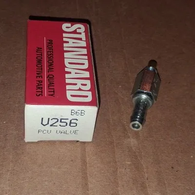
V256
Fits 1989-1994 Isuzu Amigo · 1989-1995 Isuzu Pickup (71 listed)
$17.99
View details
V259
Fits 1990-2000 Hyundai Sonata · 1990-1991 Dodge Ram 50 (124 listed)
$18.99
View details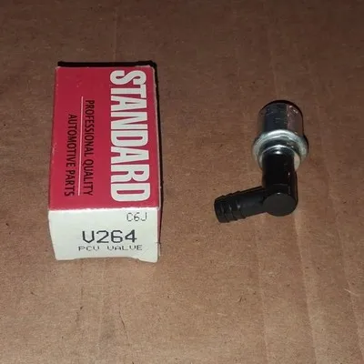
V264
Fits 1985-1994 Ford Mustang · 1988-1991 Ford Tempo (91 listed)
$14.99
View details
V268
Fits 1986-1995 Ford Taurus · 1986-1995 Mercury Sable (220 listed)
$14.99
View details
VR-111
Fits 1973-1987 Buick Century · 1971-1987 Buick LeSabre (873 listed)
$19.99
View details
DR326T
Fits 1986-1993 Chevrolet Caprice · 1987-1996 Chevrolet G30 (2140 listed)
$14.99
View details